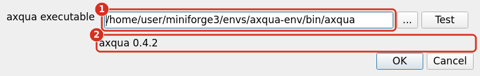
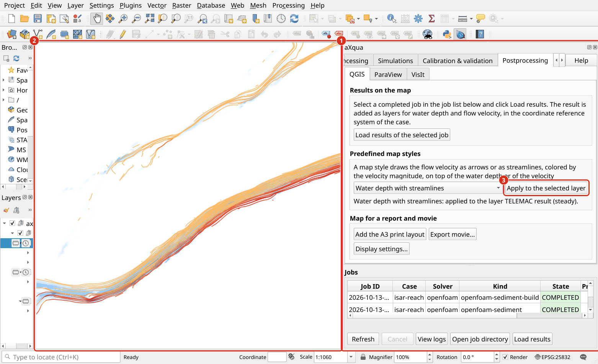

Extension de QGIS
L’extension QGIS représente l’interface utilisateur (frontend) et nécessite le programme aXqua (backend) qui exécute les tâches en tant que processus séparés à côté de QGIS. Donc, les deux frontend et backend sont nécessaires :
La façade d’extension seule n’a rien à transmettre au travail et nécessite le moteur.
Installez dans l’ordre ci-dessous.
L’extension recherche seulement le programme quand une tâche est démarrée, donc il peut être installé deuxième.
Installer QGIS
Télécharger à partir de qgis.org. QGIS 3.44 ou plus récent, QGIS 4 inclus.
Suivez les instructions d’installation.
Installer l’extension aXqua (QGIS)
Regardez ce tutoriel sur YouTube
Ouvrir QGIS, puis :
Allez à Plugins > Manage and Install Plugins.
Rechercher aXqua, cliquez sur Install Plugin.
Jusqu’à ce que l’extension soit dans le dépôt QGIS extension, prenez le .zip à partir de parutions page et utilisez Install from ZIP.
Installer le programme aXqua (backend)
Le programme aXqua est publié sur PyPI, l’index des paquets de Python, et nécessite Python 3.10 ou plus récent. pip l’installe dans un environnement Python propre, qui maintient QGIS et aXqua updatable indépendamment les uns des autres. La route recommandée est un environnement de Miniforge:
Installez Miniforge en suivant les instructions de son site web.
Ouvrir terminal (sur Windows, le Miniforge Prompt) et entrer :
mamba create -n axqua-env python=3.12
mamba activate axqua-env
pip install axqua
axqua --version
axqua --version imprimer une version (par exemple, axqua 1.0.1) confirme l’installation. pip installe également les paquets dont aXqua a besoin (numpy, pandas, scipy, pyyaml, pyproj, shapely, geopandas, rasterio, gmsh, openpyxl, matplotlib), tous de PyPI, ce qui prend moins d’une minute sur une connexion Internet rapide.
Bayesian calage exige le paquet optionnel HydroBayesCal :
pip install "axqua[calibration]".
Sans Miniforge. Sur Linux et macOS, un Python 3.10 ou plus récent déjà installé fonctionne également (python3 --version montre la version). Le module venv de Python crée l’environnement :
python3 -m venv ~/axqua-env
source ~/axqua-env/bin/activate
pip install axqua
axqua --version
Sur Debian, Ubuntu et Linux Mint, venv nécessite le paquet python3-venv (sudo apt install python3-venv). Le programme est alors ~/axqua-env/bin/axqua.
Note
Les ordinateurs Linux sans bureau. Le générateur maillage gmsh nécessite des bibliothèques graphiques du système d’exploitation, aussi quand il maillages sans fenêtre. Un ordinateur avec un bureau les a. Sur un serveur ou en WSL, l’erreur libGLU.so.1: cannot open shared object file à la premier maillage signifie qu’ils manquent. Sur Debian, Ubuntu et Linux Mint, installez-les avec :
sudo apt install libglu1-mesa libgl1 libxrender1 libxcursor1 libxfixes3 libxext6 libxft2 libfontconfig1 libxinerama1 libgomp1
Astuce
HydroBayesCal installe PyTorch, qui est livré sous Linux avec les bibliothèques GPU de NVIDIA (plusieurs gigaoctets). Le calage ne nécessite pas de GPU. Installer la version CPU de PyTorch sauve d’abord cet espace :
pip install torch --index-url https://download.pytorch.org/whl/cpu
pip install "axqua[calibration]"
Avertissement
Installer aXqua dans le Python qui est livré avec QGIS est possible mais pas recommandé. pip peut remplacer des paquets tels que numpy que QGIS utilise lui-même, et QGIS peut alors ne pas démarrer. L’extension exécute le programme aXqua comme un processus séparé, de sorte que le programme n’a pas à être dans le Python de QGIS.
Mettre à jour le moteur
Pour upgrade aXqua, et HydroBayesCal où le calage bayésien est utilisé, aux dernières versions :
mamba activate axqua-env # or: source ~/axqua-env/bin/activate
pip install --upgrade axqua
pip install --upgrade hydrobayescal
axqua --version
Check sur l’onglet Configuration de l’extension puis rapporte la nouvelle version. L’extension et le programme sont publiés ensemble sous le même numéro de version, donc mettre à jour le programme aussi après une mise à jour de l’extension dans QGIS. pip install axqua==<version> installe une version particulière, par exemple la version avec laquelle un résultat antérieur a été calculé ; historique de sortie sur PyPI liste toutes les versions.
Installer à partir du code source (développement)
Les développeurs d’aXqua, et les utilisateurs qui ont besoin d’un changement qui n’est pas encore publié, installer le programme à partir d’une copie du dépôt à la place. Cette route nécessite Git.
Note
Instant Git
Git est un système de contrôle de version utilisé pour cloner des dépôts, suivre les changements et garder les fichiers locaux synchronisés avec un dépôt distant.
Ouvrir un terminal et installer Git en utilisant le gestionnaire de paquets. Sur Debian, Ubuntu ou Linux Mint:
sudo apt update
sudo apt install git
Le Fedora:
sudo dnf install git
Pour les autres distributions, voir Instructions d’installation Git pour Linux.
Téléchargez et lancez le Git pour l’installation de Windows. L’installateur inclut Git Bash, un terminal pour exécuter les commandes Git. Après l’installation, ouvrez Git Bash dans le menu Démarrer. Les utilisateurs PowerShell ou Command Prompt rouvrent l’interface, afin qu’elle reconnaisse l’exécutable Git nouvellement installé.
Ouvrez Terminal et installez Apple’s Command Line Tools, qui incluent Git :
xcode-select --install
Suivez la boîte de dialogue d’installation pour terminer la configuration. Sinon, utilisez Homebrew pour installer Git avec :
brew install git
Vérifier l’installation `git`
À terminal, PowerShell, ou Git Bash, lancez :
git --version
Un numéro de version Git confirme que l’installation est disponible. Pour des instructions détaillées d’installation et des tutoriels sur le clonage des dépôts, la mise à jour des fichiers, la poussée des changements et la collaboration avec les succursales, voir le hydro-informatique.com Didacticiels Git.
Avec Git disponible, ouvrez terminal et entrez :
git clone https://github.com/sschwindt/aXqua.git
cd aXqua
mamba env create -f environment.yml
mamba activate axqua-env
pip install -e .
axqua --version
pip install -e . installe le programme afin qu’il fonctionne à partir de la copie, et git pull dans le dossier aXqua met à jour. Répétez pip install -e . après une mise à jour, afin que la version que lit l’extension soit courante. La copie contient également ce que le paquet publié laisse de côté : le modèle cas commenté cases/case-template/, les scripts scripts/, et les sources de cette documentation.
Connectez l’extension au programme aXqua
Retour dans QGIS:
Ouvrez le panneau aXqua à partir de la barre d’outils et cliquez sur Check sur l’onglet Configuration.
L’extension regarde en trois endroits, dans cet ordre : le chemin aXqua > Settings, la variable
AXQUA_EXE, le chemin de recherche système.Found: le panel rapporte la version et d’où elle vient. Rien d’autre à faire.
Pas trouvé: saisissez le chemin de Trouvez le chemin du programme installé à Settings, puis cliquez sur Test.
Test rapporte la version avec laquelle le chemin répond, donc un mauvais chemin est pris ici et non quand une simulation est commencée.

Le dialogue aXqua > Settings avec un chemin correctement entré. (1) Le chemin complet du programme, se terminant par envs/axqua-env/bin/axqua; le bouton … ouvre plutôt un dialogue de fichier. (2) Test rapporte la version avec laquelle ce chemin répond.
Trouvez le chemin du programme installé
Si l’extension n’identifie pas automatiquement le chemin complet du moteur de programme axqua le trouver via terminal; activez l’environnement et demandez au système où le programme est :
mamba activate axqua-env
which axqua # Linux, macOS
where axqua # Windows
Ce qu’il imprime est le chemin à saisir dans l’extension :
Linux |
|
macOS |
|
Windows |
|
Avertissement
Si les commandes ci-dessus n’impriment rien, l’environnement n’est pas actif, ou
pip install axquan’y est pas exécuté.Pour trouver un environnement sans l’activer,
mamba env listimprime chaque environnement avec son dossier. Le programme est alors<folder>/bin/axqua(Linux, macOS) ou<folder>\Scripts\axqua.exe(Windows).Un environnement créé avec
venvest le dossier nommé àpython3 -m venv; le programme est<folder>/bin/axqua, par exemple/home/<user>/axqua-env/bin/axqua.
Important
Cette section explique seulement l’installation très basique de l’extension aXqua QGIS (alias le frontend) et le code requis dans les coulisses (alias le backend). Les sections suivantes expliquent l’installation de Logiciel de simulation (TELEMAC et OpenFOAM), Configuration de l’extension, et l’installation de Après traitement (ParaView et Visit DAV).
La disposition du panneau aXqua
Après avoir réussi la configuration, le panneau présente des onglets qui suivent le flux de travail : Configuration, Case Setup, Preprocessing, Simulations (avec les sous-tabs Baseline (Telemac), OpenFOAM, Mesh convergence, Morphodynamics et Hydrology), Calibration & validation, Postprocessing, Batch-processing. Help en haut à droite ouvre la documentation à la section de l’onglet qui est affiché, et Clean Up à gauche de celui-ci libère l’espace disque (Libérer l’espace disque). Aide ouvre une copie de la documentation construite sur cet ordinateur s’il y en a une (bash docs/i18n/build_i18n.sh dans une copie du dépôt installé comme Installer à partir du code source (développement), Construction de la documentation), parce qu’elle décrit la version installée, et sinon la documentation publiée à axqua.eu. Il ouvre les pages allemandes ou françaises lorsque QGIS est réglé en allemand ou en français. Un navigateur installé sous forme de paquet snap ou Flatpak (Firefox sur Ubuntu, par exemple) ne peut pas ouvrir de fichiers en dehors du dossier d’accueil ; pour une copie en dehors de celui-ci, Aide ouvre la documentation publiée. La liste tâche ci-dessous les onglets sont visibles de chaque onglet.


Le panel aXqua dans QGIS. (1) Le panel avec ses onglets, le bouton Help et la liste tâche. (2) La carte de QGIS, ici avec le résultat d’un simulation en régime permanent dans le style de la carte Water depth with streamlines (Génération de cartes QGIS). (3) Chaque fonction de aXqua est un bouton sur l’un des onglets.